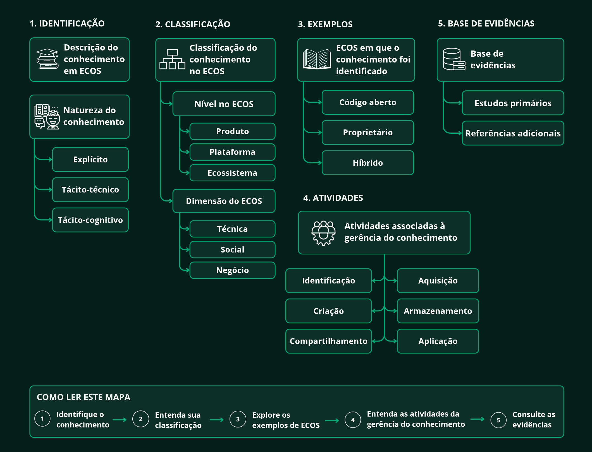
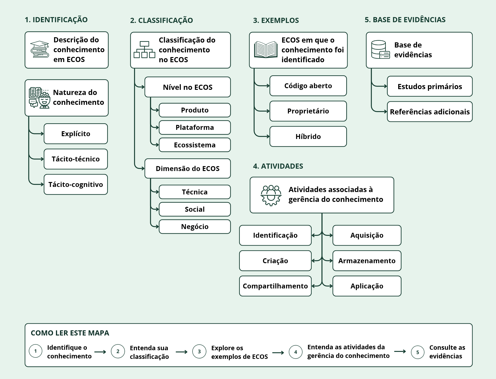

Mapa conceitual do catálogo
Como o catálogo está estruturado?
Visão geral das camadas estruturais do catálogo, conectando o conhecimento à sua classificação, gerência e base de evidências científicas. Os desafios identificados na literatura integram essa base como achados associados aos conhecimentos catalogados.


Utilize as abas abaixo para acessar o detalhamento de cada camada estrutural do mapa.
Consulta ao catálogo
Catálogo de conhecimentos em ECOS
Explore os 20 conhecimentos identificados na Revisão Rápida da Literatura. Use a busca e os filtros para localizar o que deseja consultar.
Carregando
Nenhum conhecimento corresponde aos filtros aplicados.